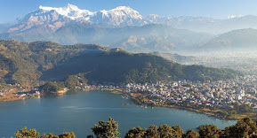
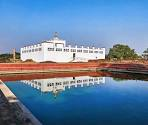
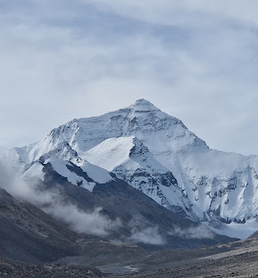

Pokhara is a lakeside city famous for Phewa Lake and views of the Annapurna range.

Lumbini, in southern Nepal, is the birthplace of Gautama Buddha and a UNESCO World Heritage site.

Mount Everest, the world's tallest peak, draws trekkers and mountaineers from across the globe.
Name: Gaurab Ale Magar